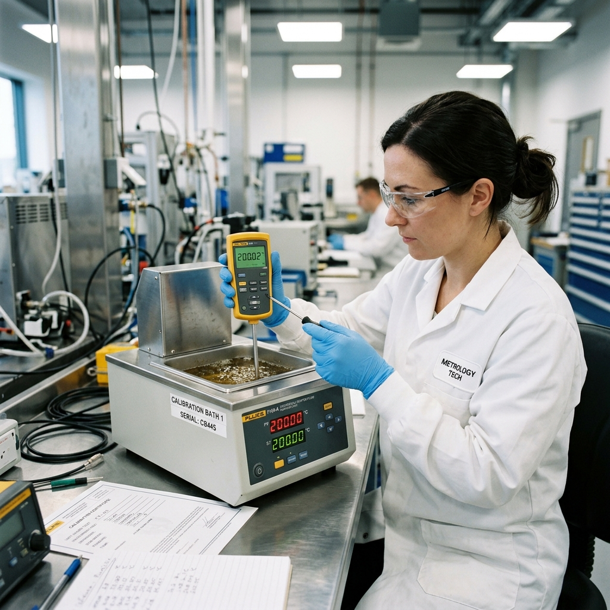

Mengapa Kalibrasi Rutin Wajib Dilakukan di Industri?

Dalam dunia industri modern, presisi adalah segalanya. Baik Anda bergerak di bidang manufaktur, farmasi, makanan dan minuman, atau otomotif, alat ukur yang Anda gunakan setiap hari adalah tulang punggung operasional Anda. Alat ukur yang tidak dikalibrasi dapat menghasilkan data yang menyesatkan, berdampak pada kualitas produk dan keselamatan kerja.
Apa Itu Kalibrasi?
Kalibrasi adalah serangkaian proses yang membandingkan nilai yang ditunjukkan oleh instrumen ukur Anda dengan nilai standar yang telah diketahui dan diakui secara nasional maupun internasional (traceable). Tujuannya sederhana: memastikan alat Anda membaca nilai yang sebenarnya.
Risiko Tidak Melakukan Kalibrasi:
- Penolakan Produk (Reject): Dimensi atau berat produk di luar batas toleransi yang diizinkan.
- Pelanggaran Keselamatan: Tekanan boiler atau tangki yang tidak akurat dapat memicu ledakan fatal.
- Denda dan Sanksi Regulasi: Kehilangan sertifikasi ISO atau izin operasional dari instansi pemerintah.
Keuntungan Kalibrasi Rutin
Melakukan kalibrasi secara rutin di laboratorium terakreditasi ISO/IEC 17025 seperti PT Kalibrasi Pengujian Indonesia (Kalpindo) bukan hanya soal memenuhi persyaratan audit. Ini adalah investasi yang menjaga reputasi perusahaan Anda. Kepercayaan pelanggan dibangun di atas konsistensi mutu yang tidak akan pernah tercapai tanpa alat ukur yang presisi.
Pastikan jadwal kalibrasi alat Anda selalu diperbarui. Konsultasikan kebutuhan kalibrasi spesifik instrumen Anda dengan tim ahli kami untuk mendapatkan metode kalibrasi yang tepat.